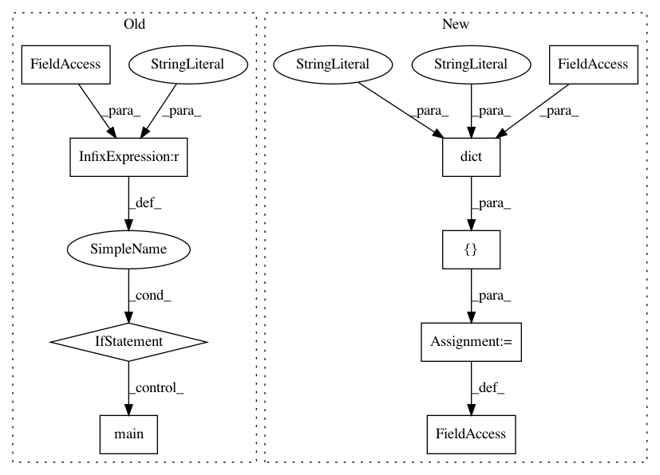

ef40bb29abc23d08c8adcc7496d5aee3e42f3e29,tensorflow_transform/beam/analysis_graph_builder_test.py,,,#,256
Before Change
second=expected_dot_graph_str)
if __name__ == "__main__":
// TODO(b/133440043): Remove this once TFT supports eager execution.
tf.compat.v1.disable_eager_execution()
test_case.main()
After Change
return {"x_chained": x_chained}
_CHAINED_PTRANSFORMS_CASE = dict(
testcase_name="with_chained_ptransforms",
feature_spec={"x": tf.io.FixedLenFeature([], tf.int64)},
preprocessing_fn=_preprocessing_fn_with_chained_ptransforms,
expected_dot_graph_str=rdigraph G {
directed=True;
node [shape=Mrecord];
"CreateSavedModelForAnalyzerInputs[0]" [label="{CreateSavedModel|table_initializers: 0|output_signature: OrderedDict([("inputs/x", \"Tensor\<shape: [None], \<dtype: "int64"\>\>\")])|label: CreateSavedModelForAnalyzerInputs[0]}"];
"ApplySavedModel[0]" [label="{ApplySavedModel|dataset_key: None|phase: 0|label: ApplySavedModel[0]|partitionable: True}"];
"CreateSavedModelForAnalyzerInputs[0]" -> "ApplySavedModel[0]";
"TensorSource[x]" [label="{ExtractFromDict|keys: ("inputs/x",)|label: TensorSource[x]|partitionable: True}"];
"ApplySavedModel[0]" -> "TensorSource[x]";
"FakeChainable[x/ptransform1]" [label="{FakeChainable|label: FakeChainable[x/ptransform1]}"];
"TensorSource[x]" -> "FakeChainable[x/ptransform1]";
"FakeChainable[x/ptransform2]" [label="{FakeChainable|label: FakeChainable[x/ptransform2]}"];
"FakeChainable[x/ptransform1]" -> "FakeChainable[x/ptransform2]";
"CreateTensorBinding[x/Placeholder]" [label="{CreateTensorBinding|tensor: x/Placeholder:0|is_asset_filepath: False|label: CreateTensorBinding[x/Placeholder]}"];
"FakeChainable[x/ptransform2]" -> "CreateTensorBinding[x/Placeholder]";
CreateSavedModel [label="{CreateSavedModel|table_initializers: 0|output_signature: OrderedDict([("x_chained", \"Tensor\<shape: [17, 27], \<dtype: "float32"\>\>\")])|label: CreateSavedModel}"];
"CreateTensorBinding[x/Placeholder]" -> CreateSavedModel;
}
)
_ANALYZE_TEST_CASES = [
_NO_ANALYZERS_CASE,
_ONE_ANALYZER_CASE,
_WITH_TABLE_CASE,
_TWO_PHASES_CASE,
_CHAINED_PTRANSFORMS_CASE,
]
class AnalysisGraphBuilderTest(test_case.TransformTestCase):
In pattern: SUPERPATTERN
Frequency: 3
Non-data size: 9
Instances
Project Name: tensorflow/transform
Commit Name: ef40bb29abc23d08c8adcc7496d5aee3e42f3e29
Time: 2019-06-20
Author: zoy@google.com
File Name: tensorflow_transform/beam/analysis_graph_builder_test.py
Class Name:
Method Name:
Project Name: tensorflow/transform
Commit Name: a41043126e966b8188f167fa471d68e4daee52ec
Time: 2019-08-06
Author: zoy@google.com
File Name: tensorflow_transform/beam/cached_impl_test.py
Class Name:
Method Name:
Project Name: tensorflow/transform
Commit Name: 1cb73ac3f9b6915232945b7b40358c29a53c5a07
Time: 2020-12-12
Author: varshaan@google.com
File Name: tensorflow_transform/saved/saved_transform_io_v2_test.py
Class Name:
Method Name: